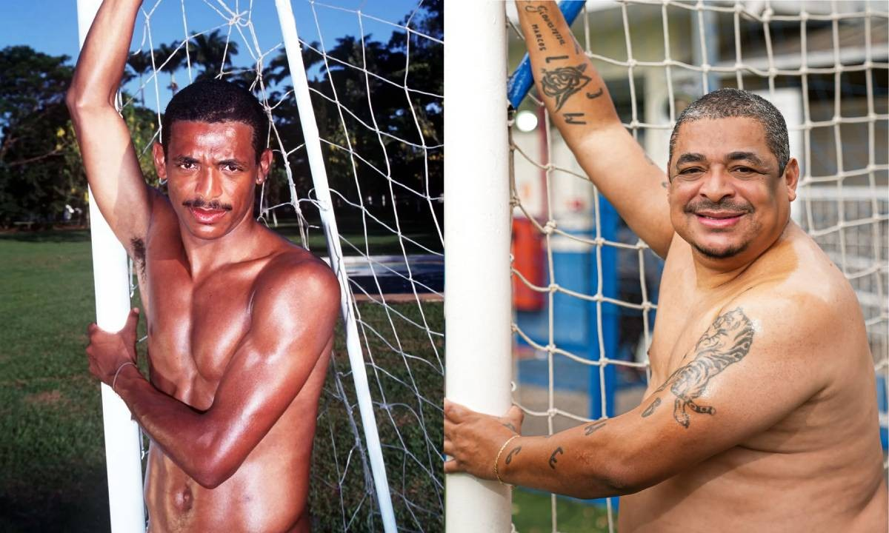

Marcos André Batista dos Santos - Vampeta
Vampeta é um ex-jogador de futebol brasileiro, nascido em 13 de março de 1974. Atuava como volante e ficou conhecido por sua personalidade irreverente e talento dentro de campo.
Ele foi um dos destaques do Corinthians no final dos anos 1990 e início dos anos 2000, conquistando títulos importantes como o Campeonato Brasileiro e o Mundial de Clubes da FIFA.
Vampeta também fez parte da Seleção Brasileira campeã da Copa do Mundo de 2002. Após encerrar a carreira, tornou-se comentarista esportivo.
Passagem pela Playboy

Em 1999, durante o auge de sua carreira, Vampeta chamou atenção nacional ao posar nu para a revista Playboy Brasil. A decisão gerou grande repercussão, pois era algo incomum para jogadores de futebol masculino na época.
O ensaio se tornou um dos momentos mais comentados de sua trajetória, reforçando sua imagem irreverente e ousada dentro e fora dos gramados.